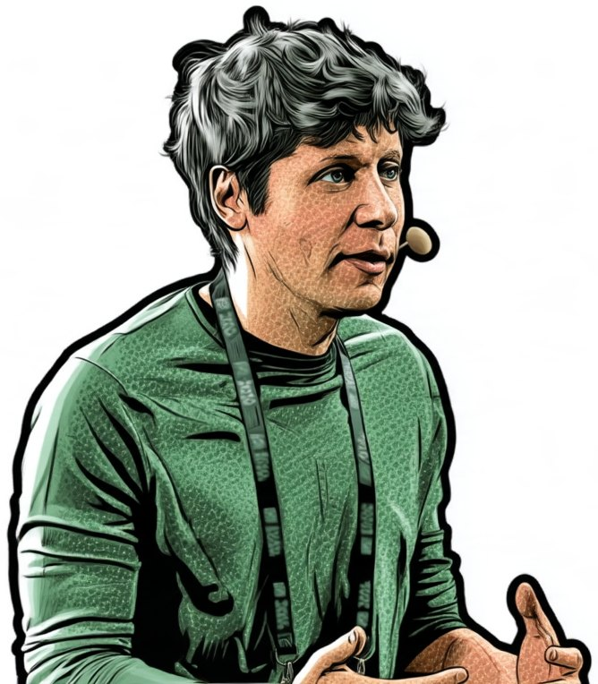
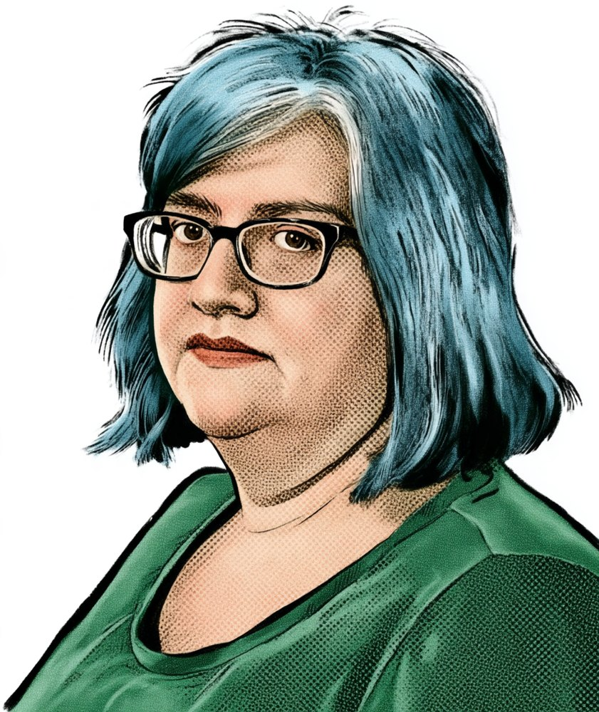
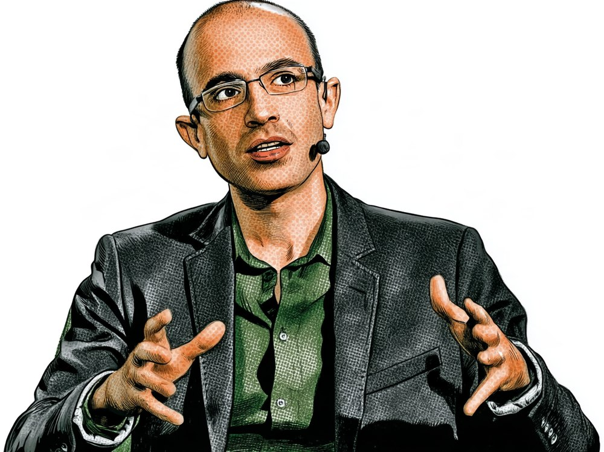
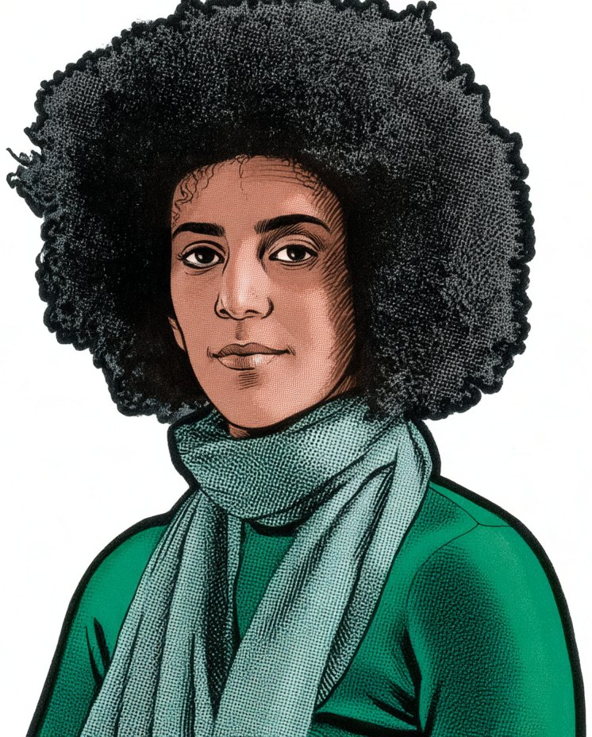
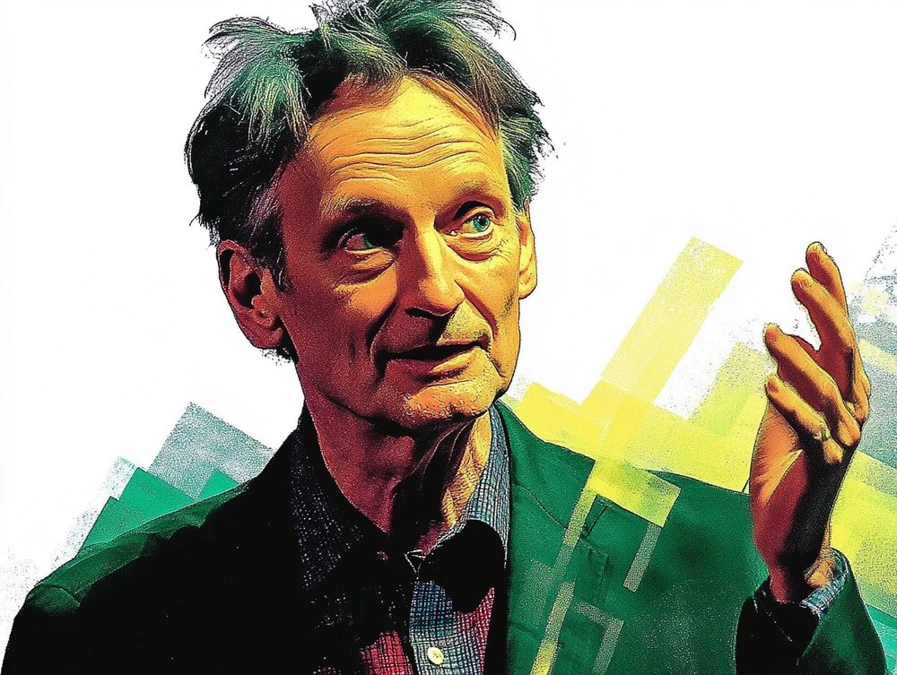
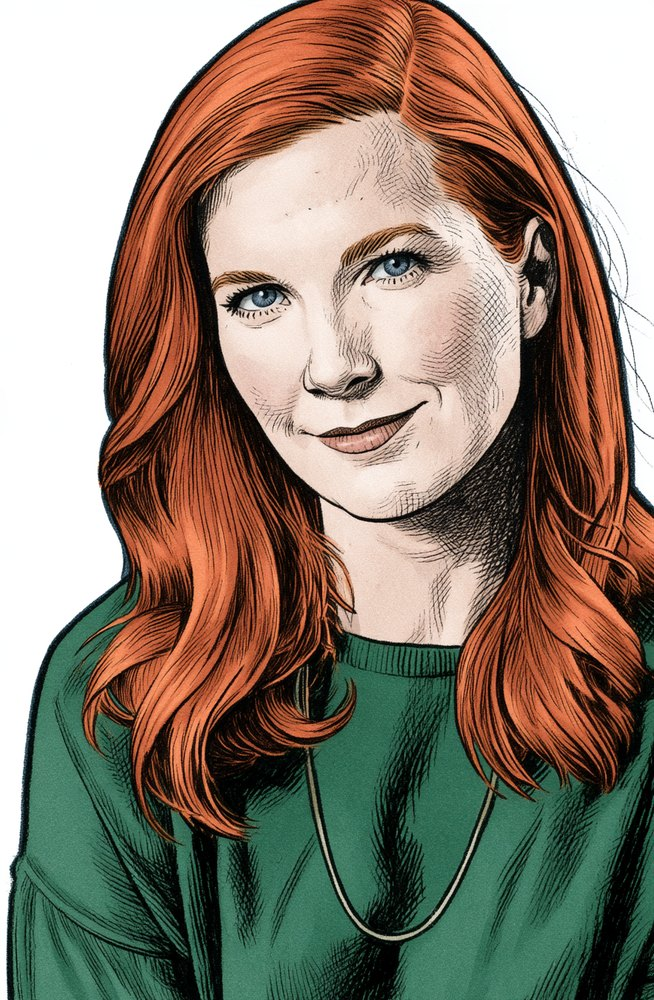
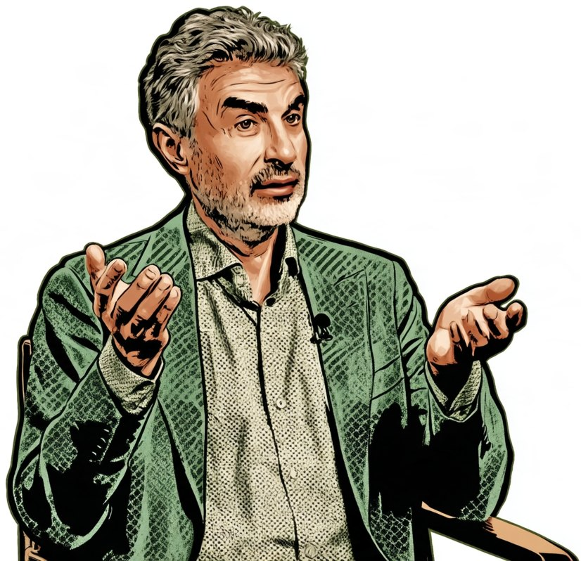

Spór drugiSecond dispute
Ryzyka jutra czy szkody dziś?
Tomorrow’s risks or today’s harms?
Wszyscy w tym sporze zgadzają się, że AI niesie ryzyko. Kłócą się o to, gdzie patrzeć. Jedni ostrzegają przed tym, co może nadejść: zagładą, cyfrową dyktaturą, końcem pracy, utratą kontroli. Drudzy pokazują szkody, które już się dzieją.
Everyone in this dispute agrees that AI carries risk. They argue about where to look. Some warn of what may come: extinction, digital dictatorship, the end of work, loss of control. Others point to harms that are already happening.
- 2015Altman
- 2016O’Neil
- 2024Harari
- 2018Gebru
- 2016Hinton
- 2021Crawford
- 2025Bengio
W 2015 roku przyszły szef OpenAI pisze na swoim blogu…
In 2015 the future head of OpenAI writes on his blog…

2015
Sam Altman
przedsiębiorca, szef OpenAI
entrepreneur, head of OpenAI
Nadludzka inteligencja maszynowa to prawdopodobnie
największe zagrożenie dla dalszego istnienia ludzkości.
Superhuman machine intelligence is probably
“the greatest threat to the continued existence of humanity.”
Skąd ten głos
Altman napisał to w lutym 2015 roku. Dziesięć miesięcy później współzakładał OpenAI, a w 2023 roku podpisał oświadczenie, że ryzyko wyginięcia z powodu AI powinno być globalnym priorytetem.
To najdziwniejszy głos w sporze: ostrzega człowiek, który sam buduje to, przed czym ostrzega. Krytycy widzą w tym strategię, bo opowieść o technologii zdolnej zniszczyć świat podnosi jej wartość. Obrońcy odpowiadają, że interes mówiącego nie przesądza o prawdziwości zdania.
Where this voice comes from
Altman wrote this in February 2015. Ten months later he co-founded OpenAI, and in 2023 he signed the statement that the risk of extinction from AI should be a global priority.
It is the strangest voice in the dispute: the warning comes from a man who builds the very thing he warns about. Critics see a strategy, because a story about a technology able to destroy the world raises its value. Defenders reply that a speaker’s interest does not settle whether the sentence is true.
…ale inni odpowiadają, że na przyszłość nie trzeba czekać.
…but others reply that there is no need to wait for the future.

2016
Cathy O’Neil
matematyczka, autorka „Broni matematycznej zagłady”
mathematician, author of “Weapons of Math Destruction”
Algorytmy już dziś decydują o tym, kto dostanie pracę, kredyt albo wyrok w zawieszeniu. Najgroźniejsze z nich są nieprzejrzyste, działają na masową skalę i wyrządzają szkody, od których nie ma odwołania.
Model to opinia zapisana w matematyce.
Algorithms already decide who gets a job, a loan or a suspended sentence. The most dangerous ones are opaque, operate at massive scale, and do damage that cannot be appealed.
A model is an opinion written in mathematics.
Skąd ten głos
O’Neil pracowała w funduszu hedgingowym w czasie kryzysu 2008 roku i widziała, jak modele, którym wszyscy ufali, pomogły wywołać katastrofę.
Jej najbardziej znany przykład to Sarah Wysocki, nauczycielka z Waszyngtonu, świetnie oceniana przez dyrekcję i rodziców. W 2011 roku straciła pracę razem z ponad dwustu innymi nauczycielami, bo algorytm wystawił jej niski wynik. Nikt nie potrafił wyjaśnić, skąd się wziął.
Where this voice comes from
O’Neil worked at a hedge fund during the 2008 crisis and saw how models that everybody trusted helped cause a disaster.
Her best-known example is Sarah Wysocki, a teacher in Washington, DC, rated highly by her principal and by parents. In 2011 she lost her job together with more than two hundred other teachers, because an algorithm gave her a low score. Nobody could explain where it came from.
Historyk dodaje, że katastrofa nie musi przyjść z hukiem…
A historian adds that catastrophe need not arrive with a bang…

2024
Yuval Noah Harari
historyk, autor „Nexusa”
historian, author of “Nexus”
AI to pierwsza technologia, która sama podejmuje decyzje i sama tworzy opowieści. Kto nią włada, może śledzić każdego i sterować tym, co ludzie czytają i w co wierzą.
AI może stać się narzędziem cyfrowych dyktatur, a my stracimy kontrolę nad obiegiem informacji.
AI is the first technology that makes decisions by itself and creates stories by itself. Whoever commands it can watch everyone and steer what people read and believe.
AI may become a tool of digital dictatorships, and we will lose control over the flow of information.
Skąd ten głos
Harari nie mówi o zbuntowanych robotach. Jego zdaniem demokracja jest rozmową, a rozmowy nie da się prowadzić, gdy nie wiadomo, kto jest botem. Proponuje między innymi zakaz podszywania się maszyn pod ludzi.
Jest historykiem, a nie badaczem AI, i bywa krytykowany za efektowne uogólnienia. Ma za to zasięg, o jakim informatycy mogą pomarzyć. Mechanizm, przed którym ostrzega, czyli inwigilacja i dezinformacja, działa już dziś.
Where this voice comes from
Harari does not talk about rebellious robots. In his view democracy is a conversation, and a conversation cannot be held when nobody knows who is a bot. Among other things he proposes a ban on machines posing as people.
He is a historian, not an AI researcher, and is criticised for sweeping generalisations. He does have a reach that computer scientists can only dream of. The mechanism he warns about, surveillance and disinformation, is already at work.
…a w tym samym czasie systemy, które już działają, mylą się nierówno.
…and all the while, systems already in use make their mistakes unevenly.

2018
Timnit Gebru
informatyczka, współautorka „Gender Shades”
computer scientist, co-author of “Gender Shades”
Sprawdziłyśmy trzy komercyjne systemy rozpoznające płeć na zdjęciu twarzy. Dla mężczyzn o jasnej skórze myliły się najwyżej w 0,8% przypadków. Dla kobiet o ciemnej skórze błąd sięgał
34,7%.
To nie jest ryzyko przyszłości. Te systemy są już sprzedawane.
We tested three commercial systems that classify gender from a photo of a face. For lighter-skinned men they were wrong at most 0.8% of the time. For darker-skinned women the error reached
34.7%.
This is not a risk of the future. These systems are already on sale.
Skąd ten głos
Badanie „Gender Shades” Gebru przeprowadziła z Joy Buolamwini, której program do wykrywania twarzy nie widział, dopóki nie założyła białej maski. Przyczyna była prozaiczna: systemy uczono głównie na twarzach osób o jasnym odcieniu skóry.
Pod koniec 2020 roku Gebru straciła pracę w Google po sporze o artykuł, w którym nazwała modele językowe „stochastycznymi papugami”. Od tamtej pory powtarza, że opowieści o przyszłej zagładzie odciągają uwagę od ludzi krzywdzonych teraz.
Where this voice comes from
Gebru carried out the “Gender Shades” study with Joy Buolamwini, whom face-detection software could not see until she put on a white mask. The cause was mundane: the systems had been trained mostly on the faces of people with lighter skin.
At the end of 2020 Gebru lost her job at Google after a dispute over a paper that called language models “stochastic parrots”. She has argued ever since that tales of future doom pull attention away from people being harmed now.
Ojciec głębokich sieci ogłasza z kolei koniec całego zawodu…
A father of deep networks, in turn, announces the end of a whole profession…

2016
Geoffrey Hinton
informatyk, noblista
computer scientist, Nobel laureate
AI zmieni rynek pracy szybciej, niż się spodziewamy.
Powinniśmy już teraz przestać szkolić radiologów.
W ciągu pięciu lat głębokie uczenie będzie odczytywać zdjęcia lepiej od nich.
AI will change the labour market faster than we expect.
“People should stop training radiologists now.”
Within five years deep learning will read scans better than they do.
Skąd ten głos
Hinton powiedział to w 2016 roku na konferencji w Toronto. Prognoza się nie sprawdziła: radiologów nie ubyło, a algorytmy weszły do pracowni jako pomoc, a nie zastępstwo. Sam przyznał później, że pomylił się co do tempa.
Dziś ostrzega, że AI zastąpi „przyziemną pracę umysłową”, a ryzyko zagłady ludzkości w ciągu trzydziestu lat ocenia na 10 do 20 procent. Historia z radiologami nie unieważnia tych obaw. Przypomina tylko, że mistrzostwo w budowaniu modeli nie daje pewności w przewidywaniu, co zrobi z nimi społeczeństwo.
Where this voice comes from
Hinton said this in 2016 at a conference in Toronto. The forecast did not come true: the number of radiologists has not fallen, and algorithms entered the reading room as an aid, not a replacement. He later admitted he had got the pace wrong.
Today he warns that AI will replace “mundane intellectual labour”, and puts the risk of human extinction within thirty years at 10 to 20 percent. The radiology story does not cancel those fears. It is only a reminder that mastery in building models gives no certainty in predicting what society will do with them.
…a rachunek za dzisiejszą AI ktoś już płaci.
…and somebody is already paying the bill for today’s AI.

2021
Kate Crawford
badaczka, autorka „Atlasu sztucznej inteligencji”
researcher, author of “Atlas of AI”
Sztuczna inteligencja
nie jest ani sztuczna, ani inteligentna.
Jest zrobiona z litu i miedzi, z prądu i wody, z nisko opłacanej pracy ludzi, którzy opisują dane, i z danych zabranych bez pytania.
Artificial intelligence
is neither artificial nor intelligent.
It is made of lithium and copper, of electricity and water, of the low-paid work of people who label data, and of data taken without asking.
Skąd ten głos
Crawford zaczyna książkę od wyprawy do kopalni litu w Nevadzie. Pokazuje, że „chmura” to kopalnie, elektrownie, centra danych i wysypiska elektroniki.
Jej argument dotyczy władzy. Koszty ponoszą miejsca i ludzie, których nie widać w prezentacjach, a zyski i decyzje skupiają się w kilku firmach. Spór o ryzyko AI jest więc także sporem o to, kto płaci.
Where this voice comes from
Crawford opens her book with a trip to a lithium mine in Nevada. She shows that the “cloud” is mines, power plants, data centres and electronic waste dumps.
Her argument is about power. The costs fall on places and people who never appear in the presentations, while profits and decisions concentrate in a handful of companies. The dispute over AI risk is therefore also a dispute over who pays.
Na koniec głos, który z obaw o jutro zrobił program badań.
Last comes a voice that turned fears about tomorrow into a research programme.

2025
Yoshua Bengio
informatyk, założyciel LawZero
computer scientist, founder of LawZero
Budujemy coraz bardziej samodzielnych agentów, a nie potrafimy sprawdzić, do czego naprawdę dążą.
Możemy stracić kontrolę nad AI.
Nie trzeba być pewnym katastrofy, żeby potraktować ją poważnie. Wystarczy, że nie umiemy jej wykluczyć.
We are building ever more autonomous agents, and we cannot check what they are really aiming at.
We may lose control of AI.
You do not have to be certain of a catastrophe to take it seriously. It is enough that we cannot rule it out.
Skąd ten głos
Bengio dzieli z Hintonem Nagrodę Turinga za głębokie uczenie. W 2025 roku założył LawZero, organizację non profit pracującą nad bezpieczeństwem systemów AI.
Przewodniczy też Międzynarodowemu raportowi o bezpieczeństwie AI. Raport opisuje utratę kontroli jako jedno z głównych ryzyk obok oszustw z użyciem deepfake’ów, więc ryzyko jutrzejsze i szkody dzisiejsze trafiły do jednego spisu treści.
Where this voice comes from
Bengio shares the Turing Award for deep learning with Hinton. In 2025 he founded LawZero, a non-profit working on the safety of AI systems.
He also chairs the International AI Safety Report. The report describes loss of control as one of the main risks, next to deepfake fraud, so tomorrow’s risk and today’s harms have ended up in one table of contents.
Jutro czy dziś?Tomorrow or today?
Jutro zaczyna się dziś.Tomorrow starts today.
Obie strony mają swoje dowody, a uwaga jest jedna. Kto chce być wiarygodny w sprawie jutra, powinien zacząć od szkód, które widać już dziś.
Both sides have their evidence, and there is only so much attention. Anyone who wants to be credible about tomorrow should start with the harms that are visible today.
Następny spór: czy modele AI można zrozumieć?Next dispute: can AI models be understood?